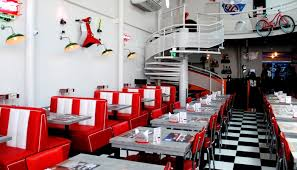

Fundada em 1960, a Hamburgueria da Cris começou como um pequeno trailer de lanches, trazendo um sabor único que rapidamente conquistou os clientes. O sucesso foi tão grande que, em poucos anos, a primeira loja física foi inaugurada, tornando-se um marco no bairro.
Com receitas tradicionais e ingredientes selecionados, mantemos até hoje o compromisso de servir hambúrgueres artesanais preparados com muito carinho. Ao longo dos anos, nossa paixão pela gastronomia nos levou a expandir, e hoje contamos com várias unidades espalhadas pela cidade.
Além da qualidade dos nossos lanches, prezamos por um atendimento acolhedor e um ambiente agradável, onde todos se sentem em casa. Nossa missão é proporcionar momentos inesquecíveis, combinando sabor e tradição em cada mordida.
Faça o seu pedido já